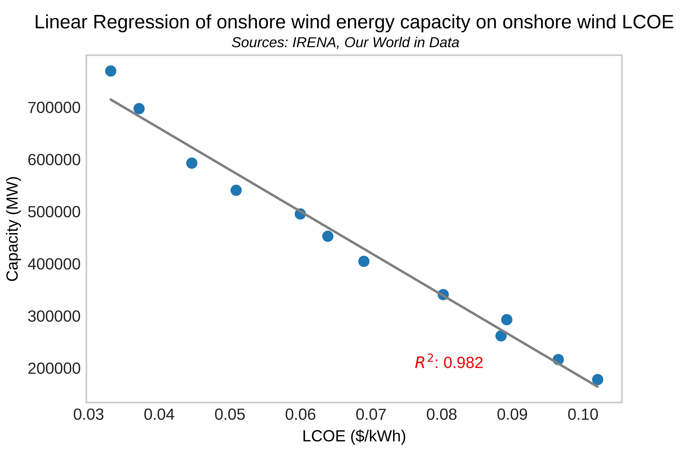

Project
Is there an economic incentive to switch to renewable energy sources?
Aim: to analyze the costs and benefits of renewable energy, specifically when compared to traditional fossil fuel sources. With increasing pressure of global institutions to reduce their CO2 emissions due to an ever-growing climate crisis, investigating the economic trends of more sustainable energy supplies is of great importance.
Chart 1:
This chart shows global energy consumption by source. It can be seen that fossil fuels dominate overall consumption, with renewables only experiencing increases in recent years. I coded a ‘selection’ panel in Vega-Lite to allow for specific source observation, to make individual trends clearer. Renewable consumption can be seen to rapidly increase post-2000. Data cleaning can be found here.
Chart 2:
The bar charts show the LCOE of energy by source. It shows that the costs associated with fossil fuels and renewables are intrinsically different; renewables have high initial capital costs but low running costs (fuel cost) and crutially do not emit CO2. Only solar's full cost is dramatically more than fossil fuels. I scraped the data from Energy Education. Find data scraping and cleaning here.
Chart 3:
This chart shows the European carbon price which has increased dramatically in recent years. This may be a factor contributing to the economic validity of renewable energy. I wanted to use an API to automate this chart, but finding free API data on carbon pricing schemes was difficult. I used a 30-day rolling average to better understand the trend the price follows. Find the data cleaning here.
Chart 4 & 5:
Charts 4 and 5 show the LCOE and installed energy capacity by source respectively. For most sources, capacity can be seen to increase, which the LCOE decreases. I used a ‘row’ function in Vega-Lite to repeat charts by source so that clear trends can be seen. I wanted to merge two datasets so I could repeat the view for both the X and Y axes, having capacity against cost plotted by source. However, Vega-Lite specifications cannot have two repeat functions, so I split these into two charts and used time as the X axes. Data cleaning can be found here.
Chart 6:
From the previous findings in charts 4 and 5, I wanted to perform regressions of some sources LCOE and capacity. Using a predictive power score matrix in pandas, I investigated the correlations between solar PV LCOE and capacity, also including logarithmic values as the PP score detects both linear and non-linear relationships. The highest correlation was found for solar PV LCOE and the log of solar capacity.This lead me to regress Solar PV LCOE on log_solar. I created the PP score matrix here from a dataset that I cleaned before.
Chart 7:
When regressing solar PV LCOE on capacity (linear) the R2 was 0.63. Then, using the logarithmic capacity values, the regression gave an R2 of 0.92. This shows that the regression model fits the data much better when using a logarithmic scale and implies that the relationship is non-linear. This was picked up by the PP score matrix. The relationship shows that as capacity increases, the cost of energy decreases. A challenge was merging the datasets in the right format. When I tried this initially, using a ‘pd.concat()’ function, the data became very difficult to manipulate. By instead using a ‘merge’ function, on the ‘Year’ column, I could join the datasets in the desired format and removed any irrelevant data points. I collected the data from IRENA and Our World in Data and then merged the two datasets. Look for logarithmic transformation here.
Chart 8
Using the same dataset I regressed LCOE on capacity for onshore wind in python, finding another strong, negative relationship, which shows that as capacity has been increasing, LCOE of onshore wind has been decreasing.The data visualisation was done in python using Scikit-Learn package to perform the machine learning regression.
Conclusions
Overall, there does seem to be an economic incentive to switch to renewable energy. With rising prices of carbon adding to the cost pressure of fossil fuels, renewables have experienced falling LCOE. This fall is correlated with and attributed to the increased installment capacity of renewable energy. As global pressures of reducing CO2 emissions increase, renewables present a sustainable platform for energy which has the potential to become cheaper than traditional sources, provided there in enough investment into the installment capacity of renewables. Other factors will have an impact on the cost structure of energy, and more research into what drives the changes seen is needed to better understand the full role renewables will play in the future of energy.